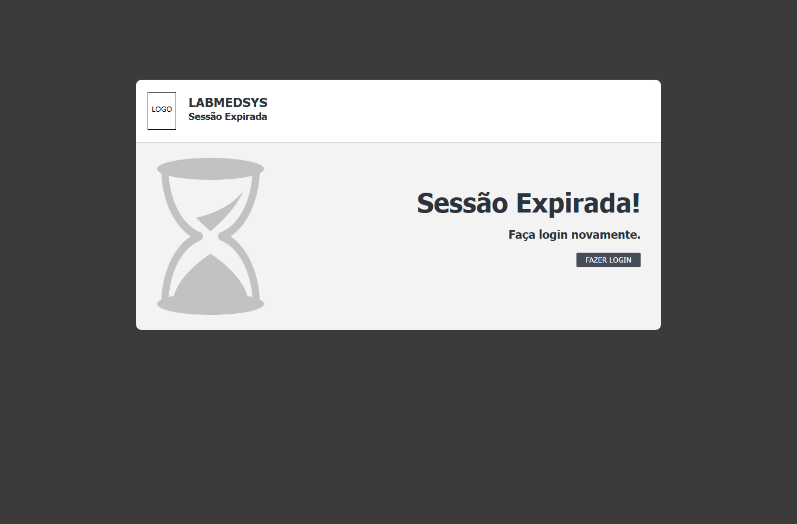
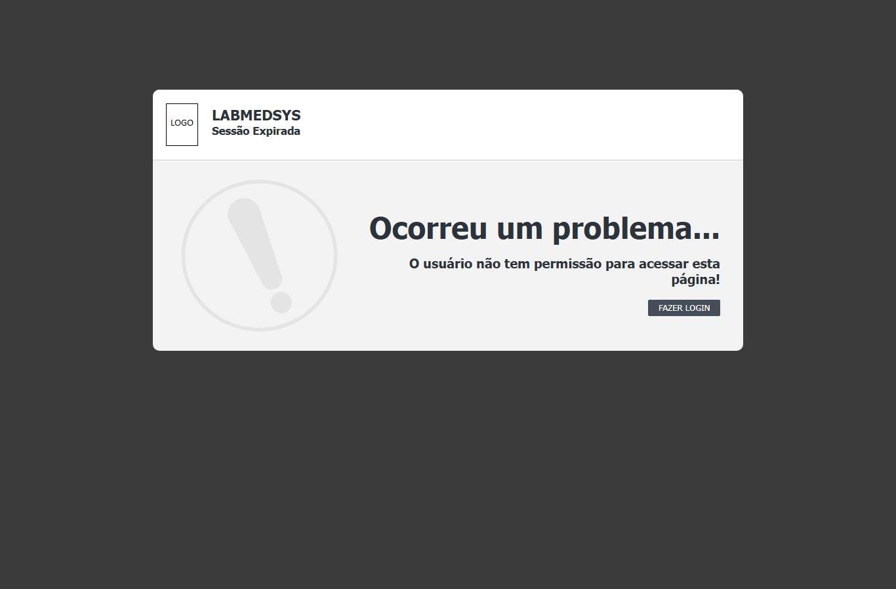
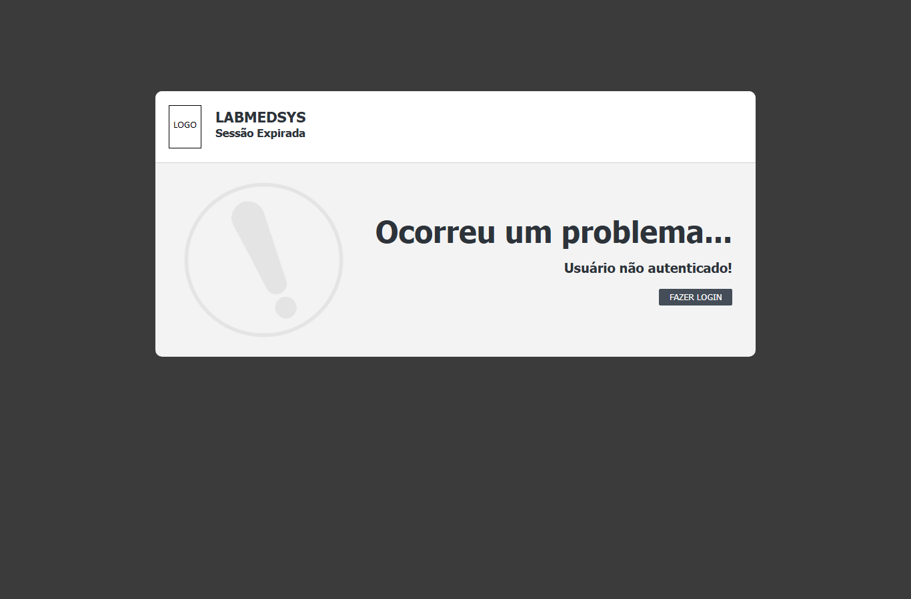

Para que serve
São duas páginas de aviso que o sistema abre sozinho, sem item de menu. Dizem, sem mostrar dado nenhum, por que a tela pedida não abriu. Sessão Expirada: o sistema não sabe mais quem é o usuário (ficou parado por tempo demais, saiu do sistema ou nunca entrou). Acesso Negado: o sistema sabe quem é, mas o perfil não tem a função da tela. Em ambas, a saída é voltar ao Login. Todos os usuários podem vê-las, sem querer.
Quem usa e em que etapa do processo
Quem usa
- Todos os usuários, sem querer: as páginas aparecem quando algo impede o uso da tela pedida.
- Quem pode abrir, incluir, alterar, excluir, imprimir e ver o histórico está em "Quem pode usar (permissões)", mais abaixo.
Em que etapa do processo entra (tela 5 do menu Acesso ao sistema, módulo Principal)
- Sessão Expirada: quando a leitura do usuário logado vem vazia, quando a moldura das telas não acha o usuário na sessão e quando a página de relatório de perfil não acha o usuário.
- Acesso Negado: quando uma lista (ou outra tela que chame a verificação) não encontra a função do usuário; quando o login por token falha.
- Digitando o endereço das páginas.
O que acontece depois (para onde o trabalho segue)
- Nada é gravado. O botão "Fazer Login" abre a tela de Login, que limpa a sessão local.
Fonte: Resumo da tela e fluxo da tela (leitura do código e dos testes). O que for leitura da área precisa ser validado com a área.
Antes de começar (o que precisa existir)
Nada a cadastrar: as páginas aparecem quando algo impede o uso da tela pedida. Para que o Acesso Negado não apareça, o perfil precisa ter a função da tela (Administração › Perfil).
Passo a passo
Situação das imagens (14/11/2026): imagens reaproveitadas dos testes de 05/10/2026, cada uma conferida contra o texto. Sem imagem: a sessão expirando durante o uso e a página técnica de erro do envio forçado (não usada por mostrar texto técnico).
Se aparecer "Sessão Expirada!"
- A sessão terminou porque a tela ficou parada (no teste, entre 10 e 20 minutos; o tempo não está configurado, CT-PRI-021), porque você saiu do sistema ou porque fechou e reabriu o navegador.

Figura 1: a página "Sessão Expirada!" com a frase "Faça login novamente." e o botão FAZER LOGIN.
- Clique em FAZER LOGIN e entre de novo.
- O que estava sendo digitado e não foi gravado se perde. Salve com frequência.
Se aparecer "Ocorreu um problema..."
- Leia a frase abaixo do título. "O usuário não tem permissão para acessar esta página!" significa que o seu perfil não tem a tela. Procure o administrador.

Figura 2: a página de Acesso Negado: "Ocorreu um problema..." e "O usuário não tem permissão para acessar esta página!". O subtítulo "Sessão Expirada" aparece mesmo aqui.
- Atenção: o cabeçalho desta página diz "Sessão Expirada" mesmo quando o assunto é a permissão (acessoNegado.aspx:24). Ignore o cabeçalho e leia a frase.
- Clique em FAZER LOGIN para voltar ao início.
O que acontece ao confirmar ou salvar
Nada é gravado: as duas páginas só informam. O botão FAZER LOGIN abre a tela de Login, que limpa a sessão local (sessaoExpirada.aspx.cs:18-21; acessoNegado.aspx.cs:34-37). As páginas não registram quem tentou abrir o quê.
O que o sistema recusa
| Situação | O que a página mostra | Imagem |
|---|---|---|
| Tela aberta sem login, ou sessão parada por tempo demais (CT-PRI-020 e 021) | "Sessão Expirada! Faça login novamente." | Figura 1 |
| Lista aberta por quem não tem a função (CT-PRI-060, 062, 064 e 069) | "Ocorreu um problema... O usuário não tem permissão para acessar esta página!" | Figura 2 |
| Endereço com token que não vale mais (por exemplo, depois do Sair; CT-PRI-022) | "Ocorreu um problema... Usuário não autenticado!" | Figura 3 |

Figura 3: a página de Acesso Negado com a frase "Usuário não autenticado!" (imagem do teste CT-PRI-022, link com token depois do Sair).
Quem pode usar (permissões)
- As duas páginas abrem para qualquer pessoa, mesmo sem login: não exigem sessão nem função.
- O botão FAZER LOGIN aparece para todos.
- A verificação de função (Acesso Negado) está na classe-base das listas e em poucas telas; as telas de edição, configuração, Microservices e relatórios não a chamam e abrem pelo endereço (DV-PRI-025). Só considera funções do Principal.
Cuidados e falhas conhecidas
- DV-PRI-025 (Alta): as telas de edição, configuração, Microservices, grupo de usuário e relatórios abrem pelo endereço para quem não tem a função, sem chegar a esta página (CT-PRI-061, 063, 065, 066, 067 e 068). Não foi testado se elas gravam.
- DV-PRI-026 (Média): um envio forçado de formulário mostra a página técnica do servidor, em vez desta página (CT-PRI-070 e 071).
- O Acesso Negado traz o subtítulo "Sessão Expirada", o que confunde (Figura 2).
- Os títulos das abas do navegador são "BASE" (Sessão Expirada) e vazio (Acesso Negado).
- Nenhuma das duas avisa antes de a sessão expirar.
Botões da tela
| Botão | Quando aparece | O que faz | Para onde leva |
|---|---|---|---|
| FAZER LOGIN | Nas duas páginas | Abre a tela de Login | Login |
Campos da tela
Estas páginas não têm campos de preenchimento. O que cada uma mostra:
| Elemento na tela | Tipo | Obrigatório | Regra, limite ou valores possíveis | Fonte |
|---|---|---|---|---|
| Logotipo e nome do sistema | Imagem e texto | Não se aplica | Mostra o logotipo do relatório e o nome do sistema configurado | sessaoExpirada.aspx:26-30; acessoNegado.aspx:19-23 |
| Subtítulo "Sessão Expirada" | Texto fixo | Não se aplica | Aparece nas duas páginas, inclusive na de Acesso Negado | sessaoExpirada.aspx:31; acessoNegado.aspx:24 |
| Título e frase | Texto | Não se aplica | Sessão Expirada: "Sessão Expirada!" e "Faça login novamente." (fixos). Acesso Negado: "Ocorreu um problema..." e a frase do motivo | sessaoExpirada.aspx:40-41; acessoNegado.aspx:33-34 |
| Frase do motivo (só no Acesso Negado) | Texto | Não se aplica | "Usuário não autenticado!" se o endereço trouxer token; o texto do parâmetro msgErro, se vier; senão, "O usuário não tem permissão para acessar esta página!" |
acessoNegado.aspx.cs:13-29 |
| Título da aba do navegador | Texto | Não se aplica | Sessão Expirada: "BASE". Acesso Negado: vazio | sessaoExpirada.aspx:8; acessoNegado.aspx:7 |
Botões e ações
| Botão ou ação | Quando aparece | O que faz | Para onde leva | Fonte |
|---|---|---|---|---|
| Fazer Login | Nas duas páginas | Abre a tela de Login | Login | sessaoExpirada.aspx:43; acessoNegado.aspx:36; sessaoExpirada.aspx.cs:18-21; acessoNegado.aspx.cs:34-37 |
Mensagens do sistema
Nem todas foram vistas numa tela. As marcadas "vista em teste" aparecem no resultado da rodada de 05 e 06/10/2026.
| Mensagem (texto exato do código) | Quando aparece | Fonte |
|---|---|---|
| Sessão Expirada! / Faça login novamente. | Sem sessão. Vista em teste: CT-PRI-020 e 021 | sessaoExpirada.aspx:40-41 |
| Ocorreu um problema... | Título fixo do Acesso Negado. Visto em teste: CT-PRI-060 (a frase exata não foi registrada) | acessoNegado.aspx:33 |
| O usuário não tem permissão para acessar esta página! | Acesso Negado sem parâmetro. É a frase das listas negadas (CT-PRI-060, 062, 064, 069); o texto da tela não foi anotado | acessoNegado.aspx.cs:28 |
| Usuário não autenticado! | Acesso Negado com o parâmetro token: token inválido ou vencido na entrada por token. Não vista |
acessoNegado.aspx.cs:15-17; Default.aspx.cs:64 |
| Seu perfil não possuí permissão! | Frase enviada pelo Login por token quando o perfil não tem nenhuma função (com o erro de acentuação "possuí"). Não vista nesta página | Default.aspx.cs:54; acessoNegado.aspx.cs:22-24 |
| Erro ao acessar este usuário! | Frase enviada pelo Login por token quando o usuário não é encontrado. Não vista | Default.aspx.cs:59 |
Quem pode fazer o quê
Ainda não levantado para esta tela
O quadro "Quem pode fazer o quê" é preenchido a partir de testes de tela por perfil (nível, área e etapa do registro), nunca por suposição. Esta tela ainda não passou por esse levantamento.